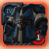
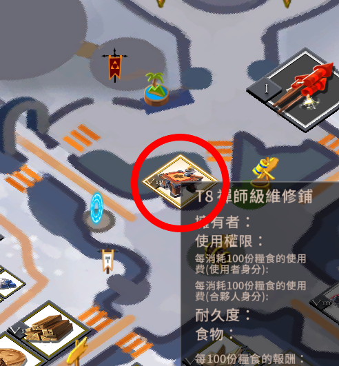
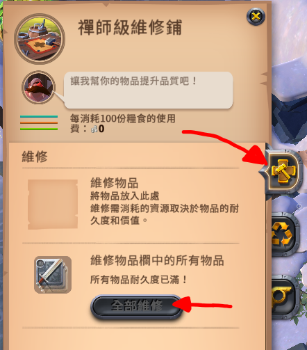
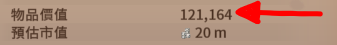

物品耐久度與修理費
物品耐久度的實際影響與修理費計算。
耐久度
物品耐久度取決於階級、附魔、以及製造物品的素材。例：階級或附魔每+1，物品耐久度會*1.5倍。
物品品質(邊框)不影響耐久度。
計算機爆幹麻煩，做到一半爆氣刪了。
公式：T2裝備部位基本耐久*(1.5^(等階+附魔等級+素材額外常數-2))
消耗
| 原因 | 耐久度消耗 |
| 物品施放技能 | 極少 |
| 承受傷害 | 少量 |
| 倒地 | -5% (包含背包的所有物品) |
| 裝備解除極限充能的狀態， 且沒有變成廢品 | -30% |
實際影響
| 圖示 | 耐久度 | 影響 |
| 100% | 無 | |
| 50% ≦ 耐久度 ＜ 100% | 無 | |
| 30% ≦ 耐久度 ＜ 50% | 物品強度-100 | |
| 10% ≦ 耐久度 ＜ 30% | 物品強度-200 | |
|  | 1% ≦ 耐久度 ＜ 10% |
物品強度-200 且該裝備穿在身上不會有任何效果(視同沒穿) |
修理
到主城的維修鋪。 
點擊全部維修，即可維修身上及背包的所有東西。
修理費計算：(由於遊戲內物品耐久%有四捨五入過，可能會有誤差。)
物品總價值
，物品的剩餘耐久度
%，修理費為
?
。
倒地或極限充能的修理費計算：
物品總價值
，
，修理費為
?
。
※如果要算多個物品的修理費，把所有物品的價值加總後輸入即可。

編輯紀錄
作者: runnywolf
最後編輯日期: 2023/2/8